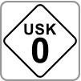
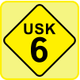
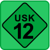
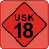

Die Unterhaltungssoftware Selbstkontrolle (USK) ist eine freiwillige Einrichtung der Computerspielewirtschaft und zuständig für die Prüfung von Computerspielen in Deutschland.
Neben dem klassischen Kennzeichnungsverfahren nach dem Jugendschutzgesetz stellt die USK auch Alterskennzeichen für Onlinespiele und Apps bereit, die über das internationale IARC-System (International Age Rating Coalition) generiert werden.
Die Anbieter der einzelnen Spiele und Apps durchlaufen einen durch IARC bereitgestellten Fragenkatalog, aus dem das entsprechende Alterskennzeichen hervorgeht. Die USK gewährleistet über verfahrensspezifische Kontrollen die Qualität der vergebenen Einstufungen. Für Spiele und Apps, die im Nintendo eShop zum Download bereitstehen, wird das Alterskennzeichen vor dem Erwerb des gewählten Titels angezeigt.




Neben den Kennzeichen finden Sie zusätzliche Angaben zu den jugendschutzrelevanten Inhalten, die bei dem entsprechenden Spiel oder der entsprechenden App eine Rolle spielen.
Weitere Informationen finden Sie auf der Website der USK unter http://www.usk.de/iarc.